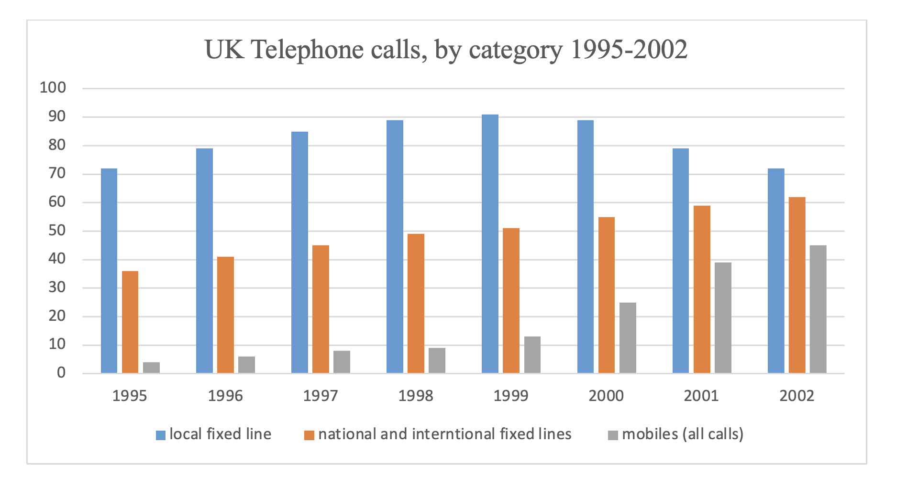

You should spend about 20 minutes on this task.
The chart below shows the total number of minutes (in billions) of telephone call in the UK, divided into three categories, from 1995-2002.
Summarise the information by selecting and reporting the main features making comparisons where relevant.
Write at least 150 words.
